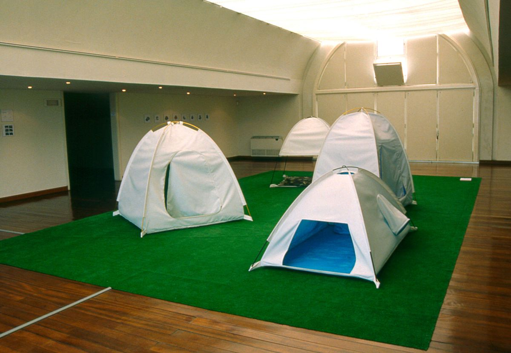
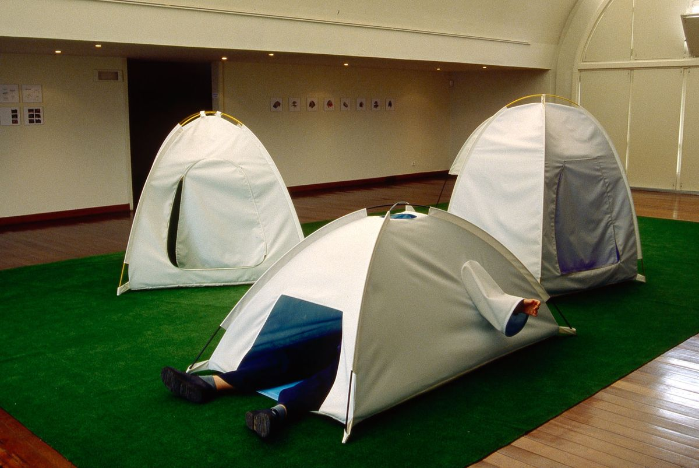
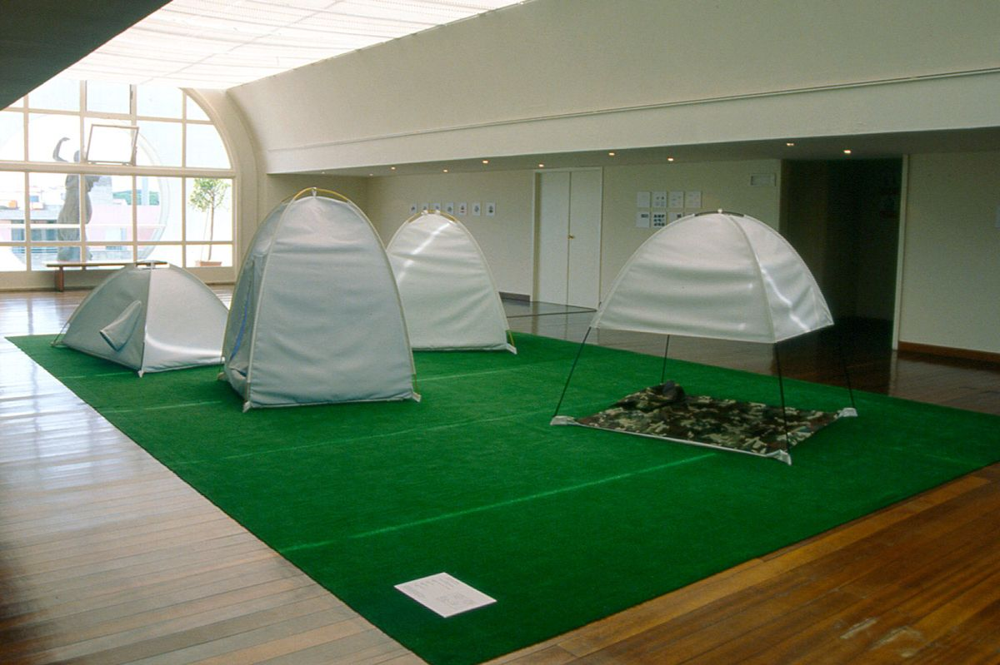
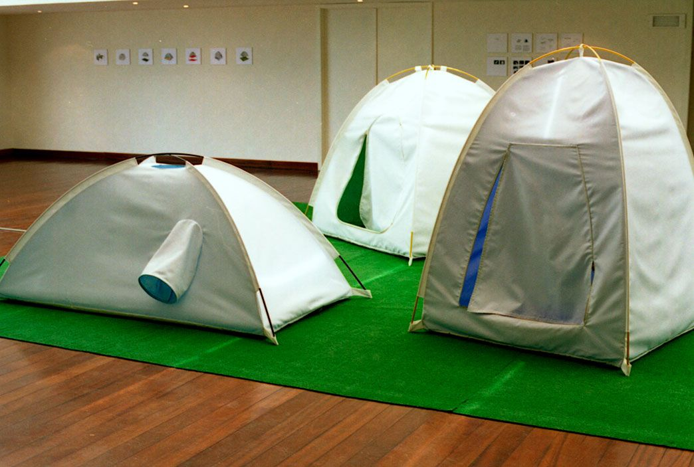
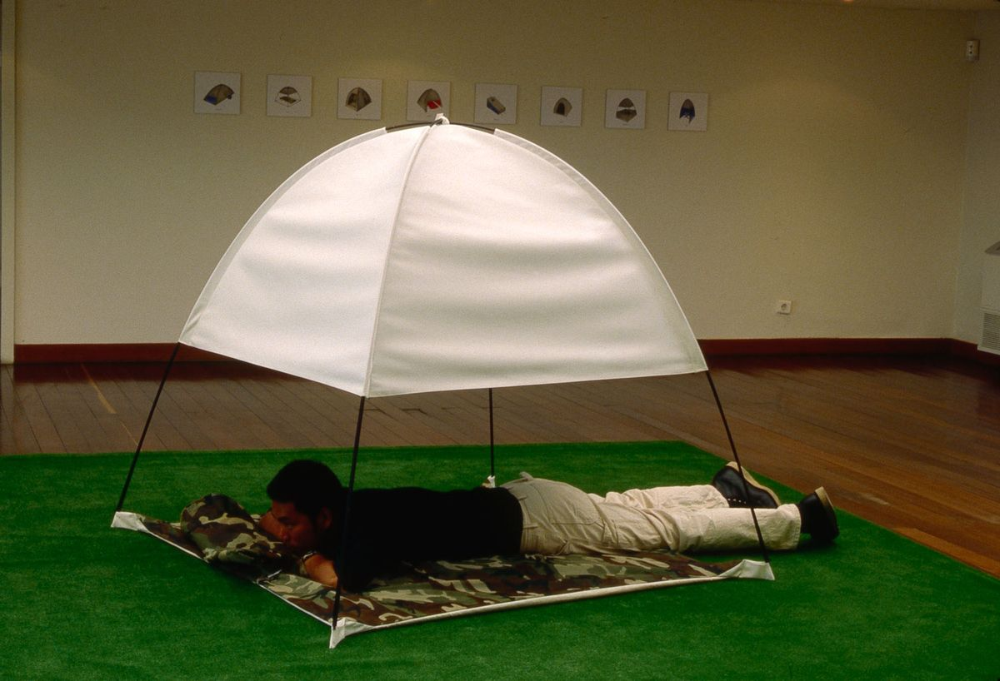
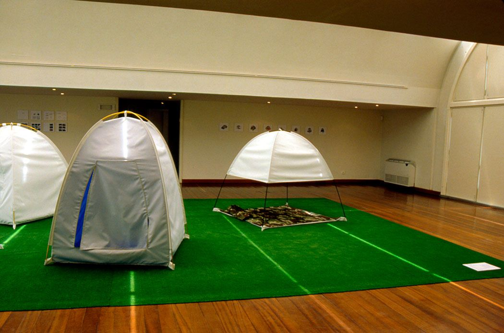

A.R.D. (Artificial Retreat Devices)
Colecção Berardo – Sintra Museu de Arte Moderna, 2001
A.R.D. (Artificial Retreat Devices) is a series of portable tents that are used to pacify the desire to get out of the urban environment. These portable shelters could be mounted and placed anywhere indoors or outdoors. Once inside, they provide a place for seclusion. Through color and sound each tent recalls a different association with nature, allowing the viewer to be somewhere else.
LazydressTent, ForestTent, CamouflageTent, OceanTent, 2001, with an instructions book and the Book of A.R.D. Projects. Installation with sound: fabric, metal, artificial grass.






Press
- Artificando ou artificializando a Natureza? Viagens e ilusões nas povoações criadas por Catarina Leitão ↗Inês Ferreira-Norman · Artecapital · 29.12.2023 · PT
- Prevailing Climate (Art in Review) (PDF)Holland Cotter · The New York Times · 11.08.2006 · EN
- Uma casa para o teu corpo (PDF)Luísa Soares de Oliveira · Público · 26.05.2001 · PT